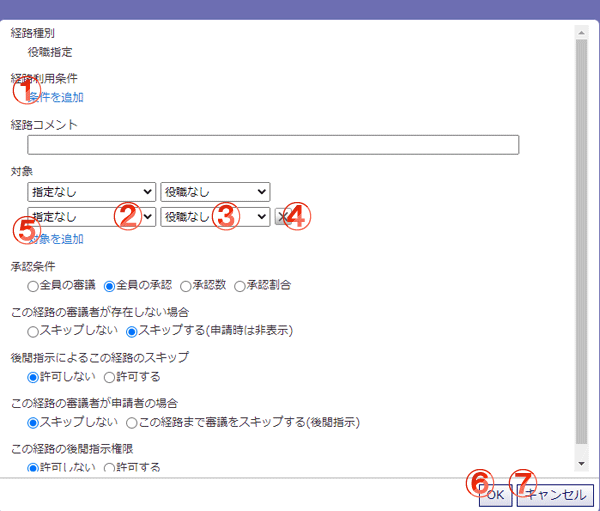

役職指定経路を登録するダイアログです。
この経路では、承認経路・最終確認にあらかじめ指定した役職に就いているユーザを設定します。

機能説明
条件を追加この経路を利用するための条件を追加します。 |
グループコンボボックスどのグループに属するユーザを経路への追加対象とするか選択します。 |
役職コンボボックスどの役職に就いているユーザを経路への追加対象とするか選択します。 |
対象削除ボタン対象の条件を一行削除します。 |
対象を追加対象の条件を一行追加します。 |
OKボタン経路の設定を完了し、このダイアログを閉じます。 |
キャンセルボタン経路の設定を行わずに、このダイアログを閉じます。 |
表示・入力項目説明
対象
稟議申請時にこの経路を使用した場合、指定したグループおよび役職に該当するユーザを経路へ追加します。
グループの指定がない場合は全グループを、役職の指定がない場合は役職に就いていないユーザを対象とします。
経路コメント
経路にコメントを付与できます。
※承認条件
この経路が承認として扱われ、審議が進行するための条件を指定します。
・全員の審議：全てのユーザが承認または却下を行った場合に審議を進行します。
・全員の承認：全てのユーザが承認を行った場合に審議を進行します。
・承認数：指定した数以上の承認があれば審議を進行します。
・承認割合：指定した割合以上の承認があれば審議を進行します。
※該当ユーザが存在しない場合
審議を行う時、この経路に設定されていたユーザが存在しなくなった場合の審議の進行を設定します。
経路の進行を許可する場合、この経路を承認扱いにして審議を進行させます。許可しない場合はそこで審議が止まります。
※後閲指示によるこの経路のスキップ
この経路に対して後閲指示を出すことができるかどうかを設定します。
※この経路の審議者が申請者の場合
この経路の審議者の中に申請者が含まれている場合、審議をスキップした状態で稟議の申請を行うかを設定します。
スキップを行った場合、これ以前の経路は全て後閲指示が出された状態とし、この経路の申請者に該当するユーザは稟議の承認を行ったものとします。
ただし、この経路までに後閲指示を許可しない経路が含まれる場合はスキップすることができません。
※この経路の後閲指示権限
この経路の審議者が後閲指示を出すことができるかどうかを設定します。許可された場合、審議者の後閲フォルダに稟議が表示されます。